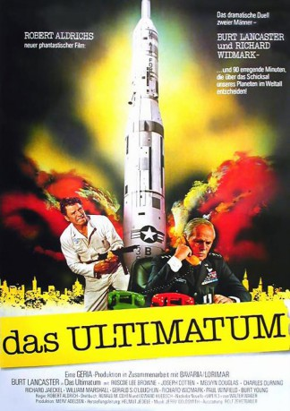

#8183 Das Ultimatum
 
 IMDB-Wertung: 6.8 / 10
IMDB-Wertung: 6.8 / 10  Metascore: 0
Metascore: 0 
Montana, USA, 1981: Der aus dem Gefängnis ausgebrochene Ex-General Dell dringt mit drei Begleitern in einen unterirdischen Raketensilo ein. Er kennt sich hier bestens aus, denn die Pläne der Station stammen von ihm selbst. Dell war aus dem Verkehr gezogen worden, weil er die wahren Hintergründe des Vietnam-Kriegs kennt und darauf gedrängt hatte, die Öffentlichkeit nicht länger zu täuschen. Vom neugewählten Präsidenten Stevens, einem Mann des Volkes, erhofft der Ex-General, er werde die ganze schmutzige Affäre offenlegen und so zu seiner, Dells, persönlichen Rehabilitierung beitragen. Dell stellt dem Präsidenten ein Ultimatum und droht mit dem Abschuss der Atomraketen, die er jetzt kontrolliert.
Jahr: 1977
Dauer: 113 Minuten
FSK: 16
Land: West-Deutschland Studio: CS-FilmTonspuren:
Untertitel:
Auflösung: 1080p (1920x1040) Größe: 12902 MB
Genre: Thriller, Drama
Regisseur: Robert Aldrich
Drehbuch: Pascal Quignard
Soundtrack: Jerry Goldsmith
Darsteller:
 Burt Lancaster als Gen. Lawrence Dell
Burt Lancaster als Gen. Lawrence Dell Roscoe Lee Browne als James Forrest
Roscoe Lee Browne als James Forrest Joseph Cotten als Arthur Renfrew - Secretary of State
Joseph Cotten als Arthur Renfrew - Secretary of State- Melvyn Douglas als Zachariah Guthrie
 Charles Durning als President David T. Stevens
Charles Durning als President David T. Stevens Richard Jaeckel als Capt. Stanford Towne
Richard Jaeckel als Capt. Stanford Towne- William Marshall als William Klinger - Attorney General
 Gerald S. O'Loughlin als Brig. Gen. O'Rourke
Gerald S. O'Loughlin als Brig. Gen. O'Rourke Richard Widmark als Gen. Martin MacKenzie - Commanding General SA
Richard Widmark als Gen. Martin MacKenzie - Commanding General SA Paul Winfield als Willis Powell
Paul Winfield als Willis Powell Burt Young als Augie Garvas
Burt Young als Augie Garvas- Charles Aidman als Bernstein
 Leif Erickson als Ralph Whittaker - CIA Director
Leif Erickson als Ralph Whittaker - CIA Director Charles McGraw als Air Force Gen. Peter Crane
Charles McGraw als Air Force Gen. Peter Crane Morgan Paull als First Lt. Louis Cannellis
Morgan Paull als First Lt. Louis Cannellis William Smith als Hoxey
William Smith als Hoxey- David Baxt als Sgt. Willard
 Glenn Beck als Lieutenant
Glenn Beck als Lieutenant- Ed Bishop als Maj. Fox
 Phil Brown als Rev. Cartwright
Phil Brown als Rev. Cartwright- Gary Cockrell als Capt. Jackson
 Don Fellows als Gen. Stonesifer
Don Fellows als Gen. Stonesifer Garrick Hagon als Driver Alfie
Garrick Hagon als Driver Alfie William Hootkins als Sgt. Fitzpatrick
William Hootkins als Sgt. Fitzpatrick John Ratzenberger als Sgt. Kopecki
John Ratzenberger als Sgt. Kopecki- Robert O'Neil als Briefing Officer
 Shane Rimmer als Col. Alexander B. Franklin
Shane Rimmer als Col. Alexander B. Franklin- Gary Harper als Air Force Sgt. Andy Keen (uncredited)
- Simon Scott als Gen. Phil Spencer - Chairman of the Joint Chiefs of Staff
 Bill Walker als Willard
Bill Walker als Willard- Weston Gavin als Lt. Wilson
- Elizabeth Halliday als Stonesifer's Secretary
- David Healy als Maj. Winters
- Thomasine Heiner als Nurse Edith
- Ray Jewers als Sgt. Domino
- Ron Lee als Sgt. Rappaport
- Robert Sherman als Maj. LeBeau
- Robert MacLeod als State Trooper Chambers
- Lionel Murton als Col. Horne
- Pamela Roland als Sgt. Kelly
- Mark Russell als Airman Mendez
- Rich Steber als Capt. Kincaid
- Drew W. Wesche als Lt. Witkin
- Kent O. Doering als Barker
- Allan Dean Moore als Sperling - Sharpshooter
- M. Phil Senini als Sharpshooter
- Rich Demarest als Sharpshooter
Datei: X:\1977\Ultimatum, Das (1977, FSK16, 1920x1040).mkv seit 07.02.2018
Festplatte: HD 1971-1979
 Es gibt insgesamt 33 Filme in der Gruppe '1977'
Es gibt insgesamt 33 Filme in der Gruppe '1977'